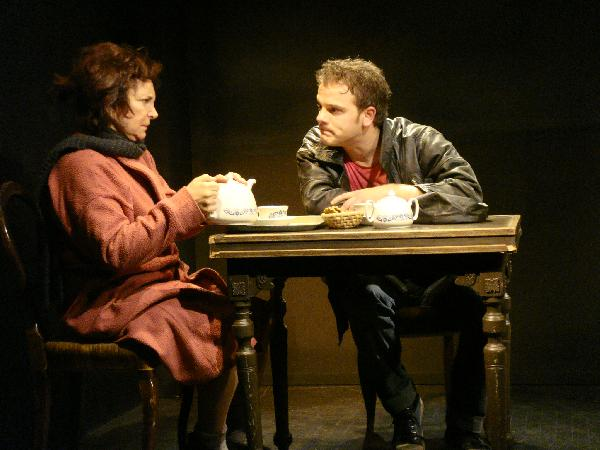
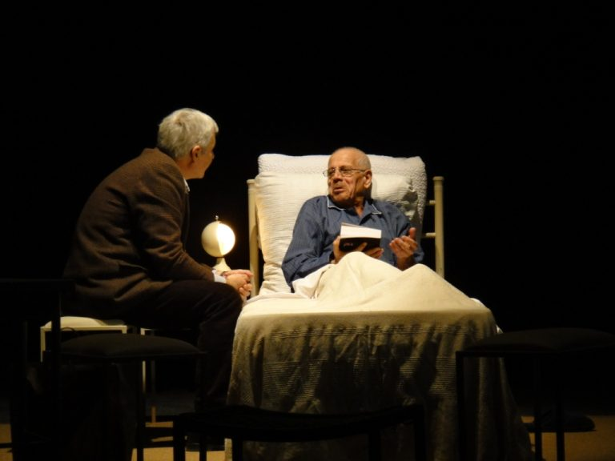
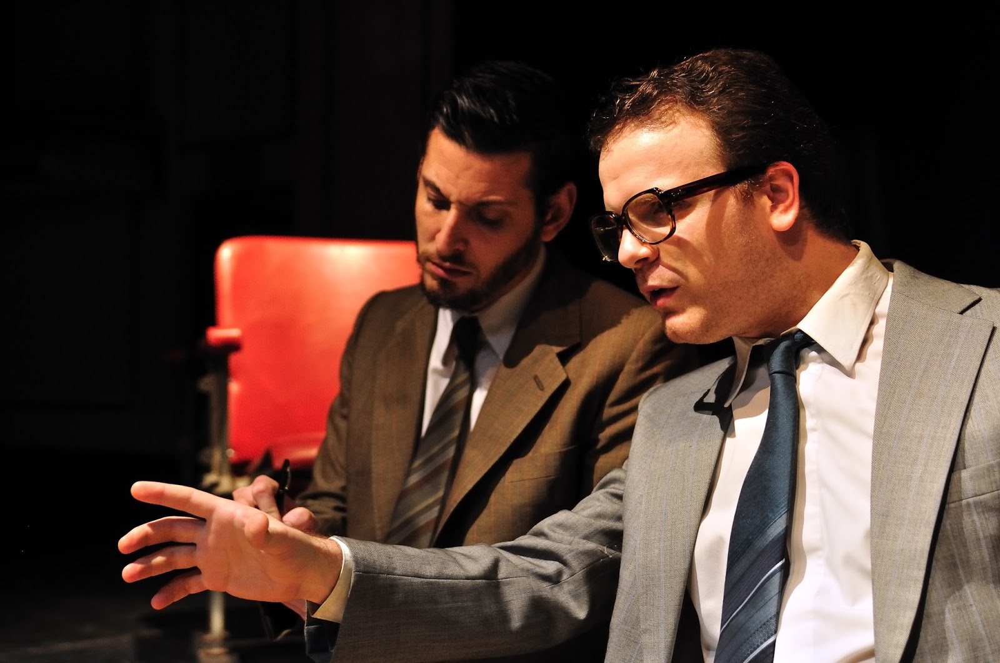
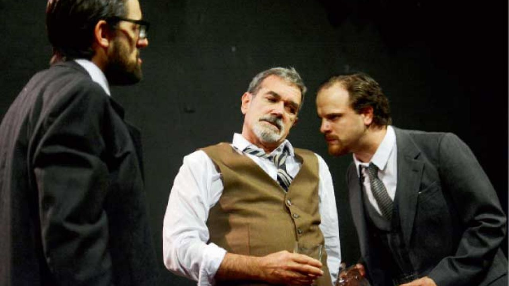

"Nicolás Dominici personifica muy bien al joven seductor y vivaracho, angustiado por la soledad, imponiendo un carácter que oscila convenientemente entre la piedad y el rencor, de acuerdo a la situación reinante."


"Otras situaciones efervescentes como un peculiar amigo judío de antaño que lo trata como oveja descarriada o un bochornoso suceso con una joven oportunista, conforman los ingredientes de esta pieza del estadounidense Donald Margulies, con dirección de Agustín Alezzo y Nicolás Dominici. La dupla consigue marcar muy bien la trayectoria de la brillante glorificación profesional del protagonista, a la opaca tristeza y soledad que lo acecha posteriormente."

Mención aparte merecen fundamentalmente dos cosas: la dirección y la sala teatral donde se muestra la obra. En cuanto a lo primero, la puesta en escena es compartida, por primera vez, entre Alezzo y el joven Nicolás Dominici, quien ya había participado como actor en otras puestas.
.jpg)
"Siniestra y mordaz, Invernadero es una obra que Harold Pinter escribió en 1958, pero la guardó hasta que se decidió a estrenarla tres décadas después. A pesar del tiempo, esta pieza confirma la perseverancia del autor sobre ciertos temas que se reiteran en su producción: conductas absurdas que revelan la crueldad que se disimula en el comportamiento cotidiano de los hombres".

"Sobresaltante. Impactante. Por obra y gracia del elenco y de la dirección, nuevamente volvemos a pasearnos por la historia Argentina con atrapante hipnosis."
.JPG)
"En tanto, el trabajo de Nicolás Dominici es deleitable. Dueño de una corporalidad que lleva y maneja de buen modo en el escenario, deja percibir al espectador sus apacibles estados que, sin embargo, se acumulan hasta llegar al estallido."

“El invernadero” de Harold Pinter. Con Edgardo Moreira, Nicolás Dominici, Federico Tombetti y elenco. El camarín de las musas, Mario Bravo 960.
"Como nos tiene acostumbrados, la certera mano de Agustín Alezzo imprime un ritmo vertiginoso a la puesta y logra el lucimiento del resto del elenco."

"Nicolás Dominici, un actor realmente prodigioso (inolvidable su labor en un anterior espectáculo de El Duende, El rufián en la escalera ), triunfa en esta difícil demostración de capacidad histriónica, acompañado por una excelente Angela Ragno (es también la madre de El largo adiós , en una composición totalmente distinta) y por ese intérprete impecable que es siempre Néstor Ducó, para quien no hay papeles pequeños."